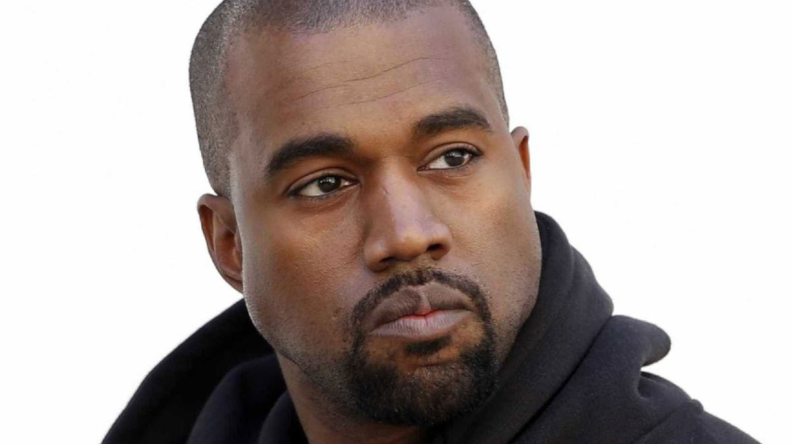

Ye👽
Ye[a] (/jeɪ/ YAY; born Kanye Omari West /ˈkɑːnjeɪ/ KAHN-yay; June 8, 1977) is an American rapper, singer, songwriter, record producer, and fashion designer. One of the world's best-selling music artists, with over 160 million records sold, West has won 24 Grammy Awards, the joint tenth-most of all time, and the joint-most Grammy awards of any rapper along with Jay-Z. Among his other awards are the Billboard Artist Achievement Award, a joint-record three Brit Awards for Best International Male Solo Artist and the Michael Jackson Video Vanguard Award.